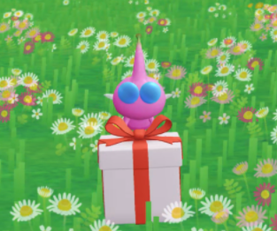
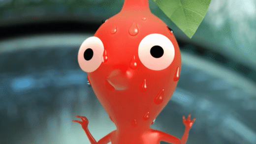

엽서 시스템
피크민에게 탐험을 시키거나 버섯을 부수게 만들면 기념으로 엽서를 가져올 때도 있다. 이 엽서들은 포켓몬고(Pokemon GO) 유저들이 찍은 사진이라고 들었다.그래서 그런지 장소도 굉장히 랜덤하고 위 사진처럼 충격적인 엽서가 등장하기도 한다.
운이 좋으면 피크민의 얼굴이 크게 나오기도 하는데, 무척 귀엽다...
귀엽다고 방심하면 안 되는 게임입니다...
나는 2024년 5월 무렵부터 피크민 블룸을 플레이하기 시작했다.
현실 세계를 걸어 다니면서 걸음수를 채워 피크민을 키우면 되는 간단한 게임인데, 포켓몬GO랑 비슷한 AR(증강 현실) 방식이며 다른 게임들처럼 전투 시스템이 있는것도 아니고, 특별한 게임성이 있는것도 아니다.
그저 걷는것만이 피크민블룸의 목적이다.
처음 시작했을 때는 너무나도 밋밋한 게임성에 놀랐다. 평소에 화려하고 자극적인 시스템의 게임을
좋아하던 나에게 마치 저속노화 식단을 시작하는 기분이었달까… 하지만 피크민의
귀여운 목소리와 행동에 빠져 매일매일 조금씩 걷게 되는 경지에 다다르게 되었다.
이제 피크민 블룸 속 시스템 중 내가 좋아하는 것들을 소개하고자 한다.
조형물이나 건물 등에 버섯이 자라나게 되는데, 피크민을 파견시켜 버섯을 부수게 할 수 있다. 왜 부수는지는 아직도 잘 모르겠다… 그런데 8월 무렵부터 갑자기 SNS를 통해 피크민블룸 붐이 온 뒤로 곤란해졌다. 버섯에 들어갈 수 있는 최대 인원수 5명 안에 들기가 힘들어졌기 때문이다. 다들 금방 관둘 줄 알았는데 아직도 자리가 없다. 곤란하다…역시 피크민은 매력적인 것 같다.
피크민에게 탐험을 시키거나 버섯을 부수게 만들면 기념으로 엽서를 가져올 때도 있다. 이 엽서들은 포켓몬고(Pokemon GO) 유저들이 찍은 사진이라고 들었다.그래서 그런지 장소도 굉장히 랜덤하고 위 사진처럼 충격적인 엽서가 등장하기도 한다.
운이 좋으면 피크민의 얼굴이 크게 나오기도 하는데, 무척 귀엽다...
처음에 학교 근처에서 엽서를 들고 왔을때 엽서에 피크민이 들어있는 것을 보고 너무 신기해서,
또 다른 엽서를 가져오게 하려고 하루종일 탐험을 시켰던 기억이 있다. 지금 생각해보면 조금
미안하다. 요즘은 조금이라도 더 웃긴 엽서를
모으기위해 혈안이다.
비슷한 피크민을 모으는 것에 점점 질려갈때쯤 어떤 사건이 벌어졌다.
피크민 블룸에는 밀접도라는 시스템이 있는데 밀접도를 4단계 찍게되면 피크민이
고향(태어난 장소)에서 선물을 들고온다.

처음엔 이 시스템이 존재하는지도 몰랐다. 내 첫 피크민이 선물을 가지고 왔을때 정말 감동받았다...
그동안 정도 많이 들었는데 얘가 보답해주는건가 싶었고, 피크민이라는 생물에 더 큰 애정이
생기기 시작했다. 그때가 처음 시작한 후 3주 정도 됐을 무렵이었고 단조로운 시스템에 게임을 접을까 생각하고 있던 참인데.. 그때부터 관리하지도 않던 피크민 밀접도를 관리하기 시작했고 이제는 새로운 데코 피크민을 모을 생각에 열심히 걸음수를 채우고 있다.
걷기 싫어 인간이었는데, 피크민을 핑계로 조금씩 걷다보니 요즘은 평균 걸음수가 5000~10000보를
왔다갔다 한다. 더 걷게되면 오히려 좋다는 생각까지 든다.피크민 덕분에 건강이
좋아지고 있는것 같다…

어쩌면 피크민이 나를 키우고 있는지도 모르겠다.